wanderquest × verci nyc — a private quest
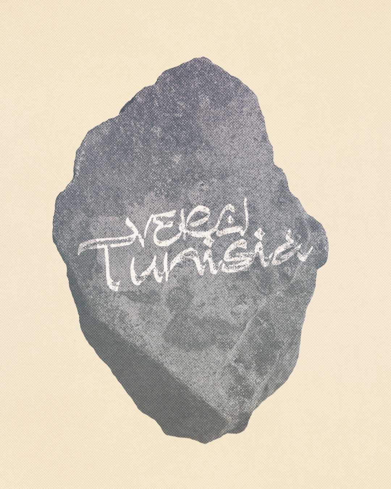
The Nomadic Quest
Experience / From the living medina of Tunis to the ancient Numidian city of Dougga and the Andalusian town of Testour, a full day on the Mediterranean aboard a catamaran, and deep into the south: the mountain oases, canyons and salt lakes of Tozeur — converging on a night under the stars in the Sahara desert.
Mediterranean light, desert silence, and centuries of layered civilisation coexist, sometimes within hours of each other. Travelling through them is less a visit than a rereading. Curiosity is the compass.
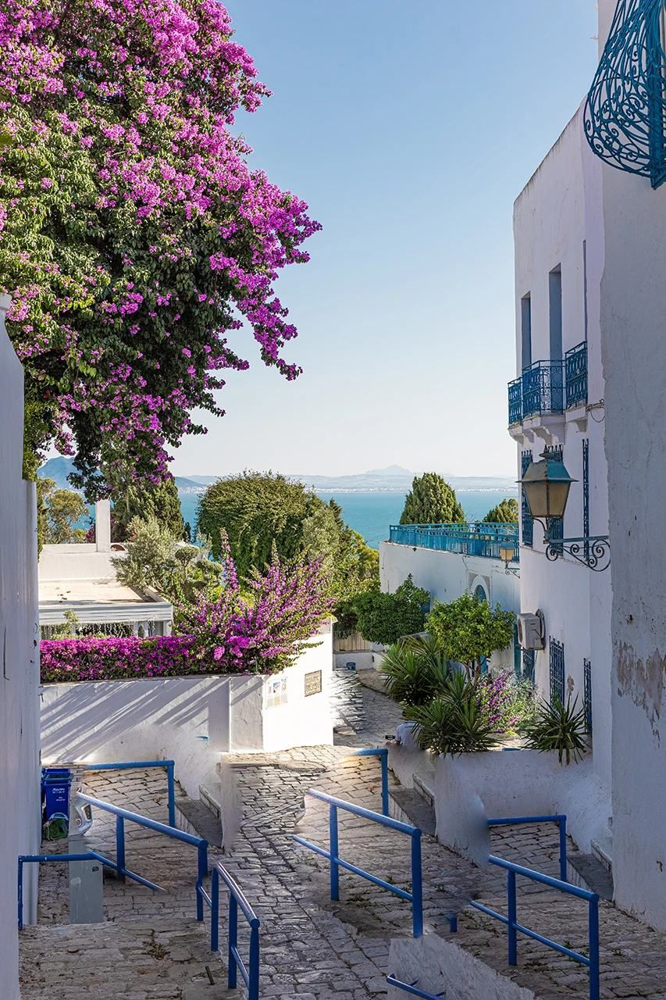
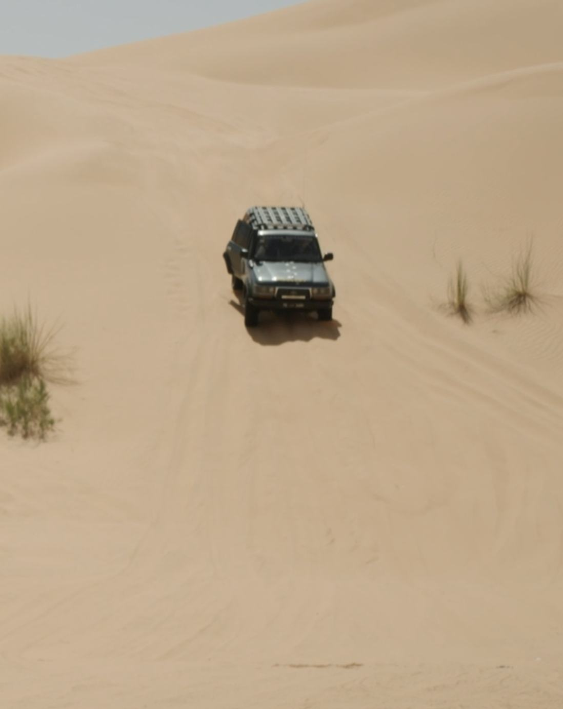
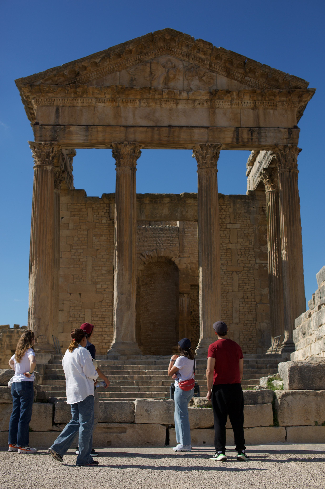
Suggested Itinerary
carnet de route · oct. 2026
Click a stop — or the passport itself
Day 01 · 19 Oct 2026
Arrival
P<TUNVERCI<<QUEST<<<<<<<<<TUN2026101900<<<01
Field Notes
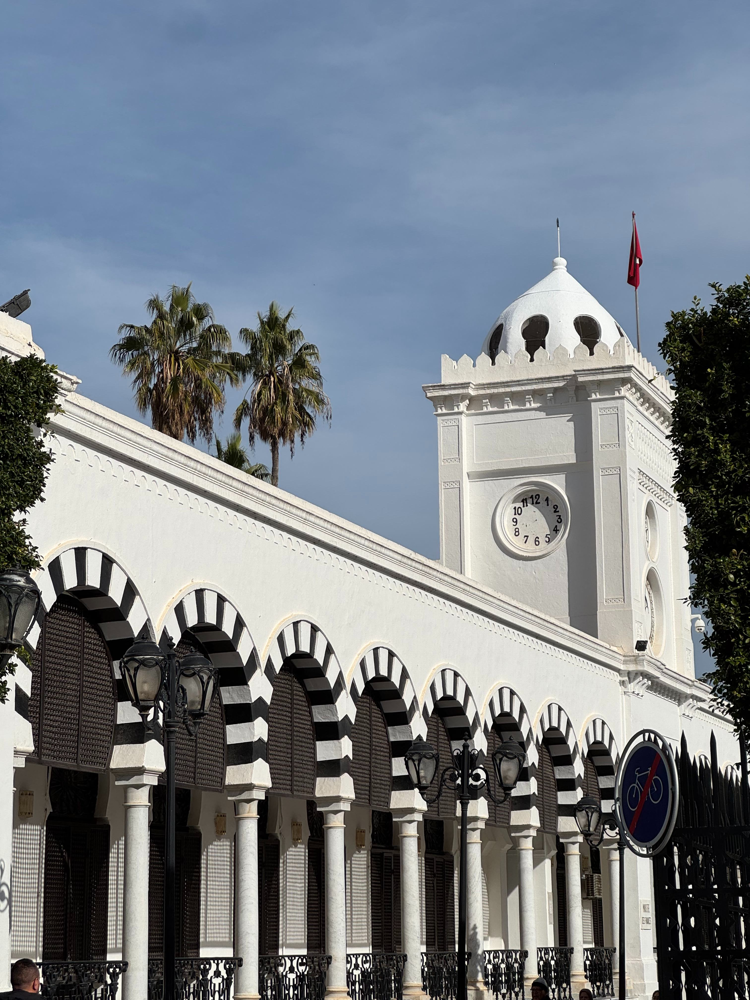
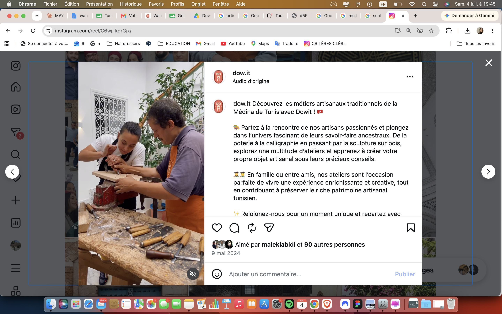
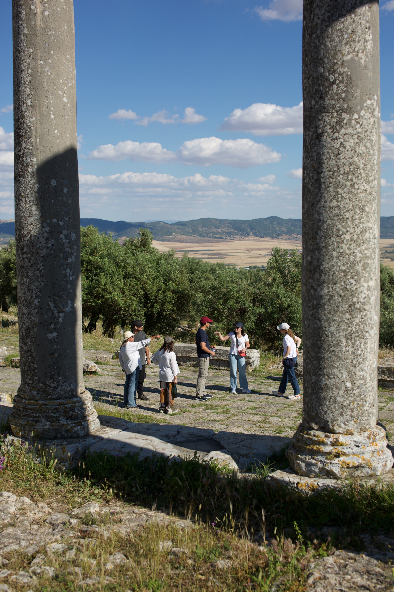
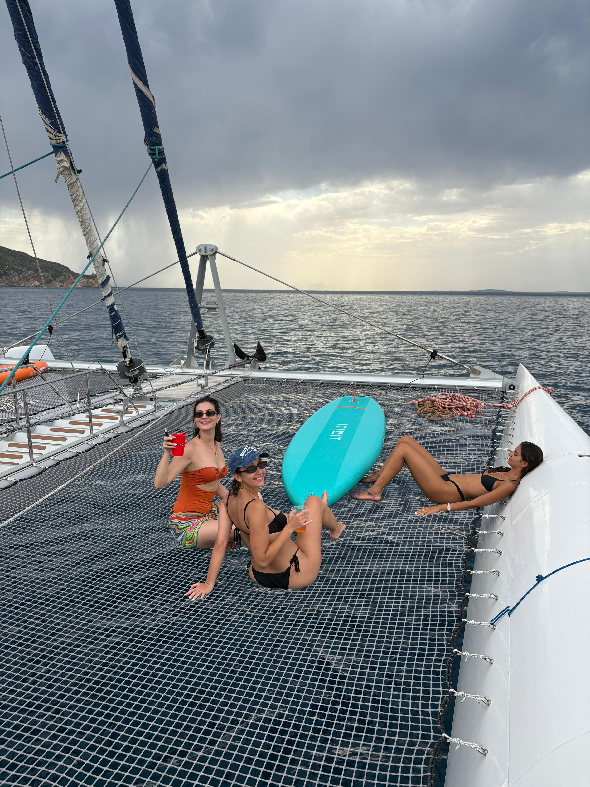
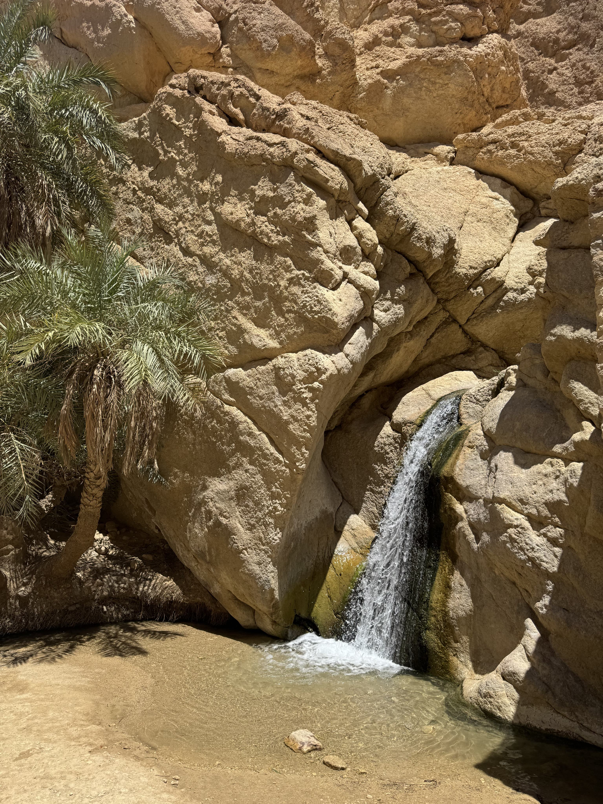
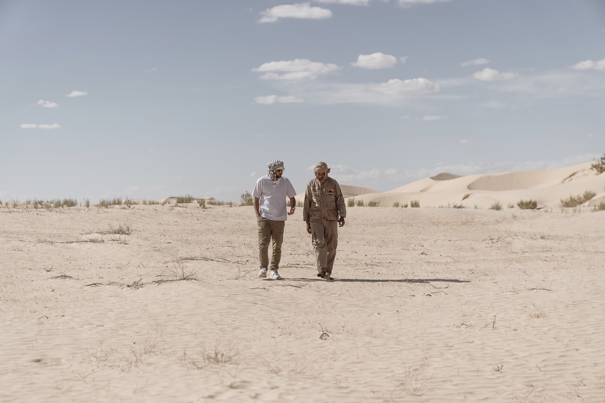
Day 05 — seven hours south
TUNIS → TAMERZA → CHEBIKA → MIDES → TOZEUR
Tozeur & the mountain oases
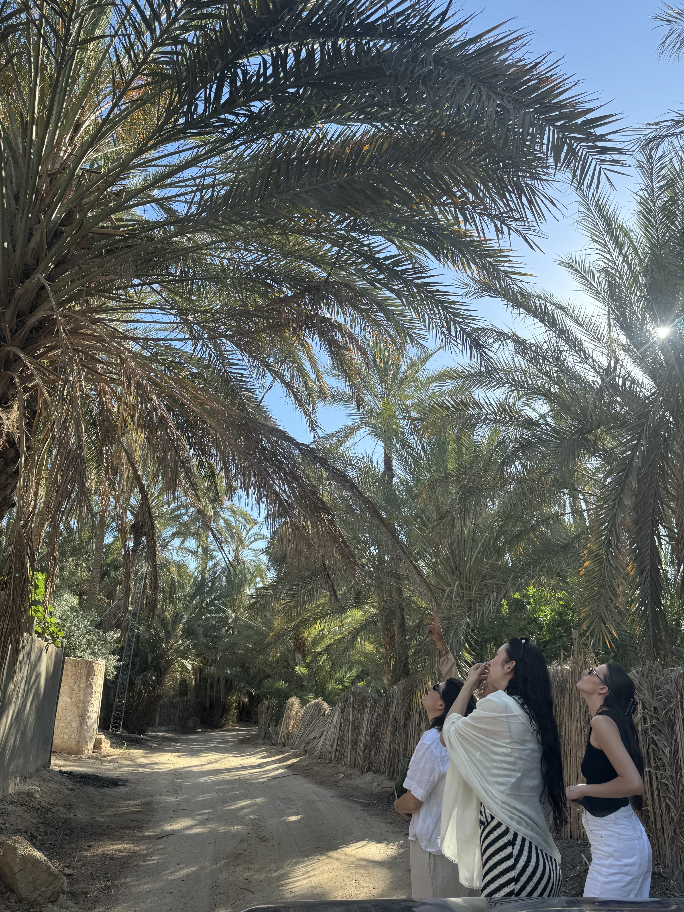
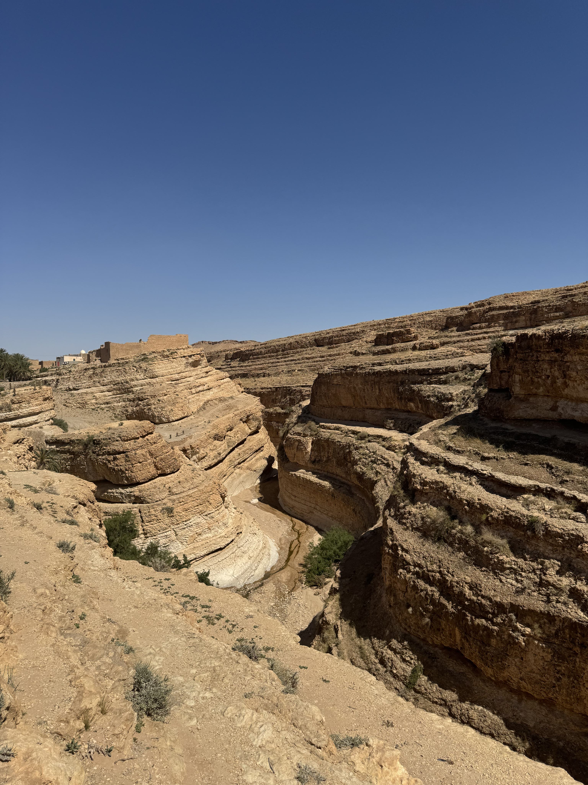
Day 06 — a night with the nomads
The road narrows, and then disappears. The Grand Erg Oriental begins — one of the two great sand seas of the Sahara.
Dinner prepared on-site around a fire. The night spent under the stars: tents, bedrolls, blankets, open sky. No electricity. No schedule. Just the silence that surprises, and the kind of darkness that makes the stars look different.
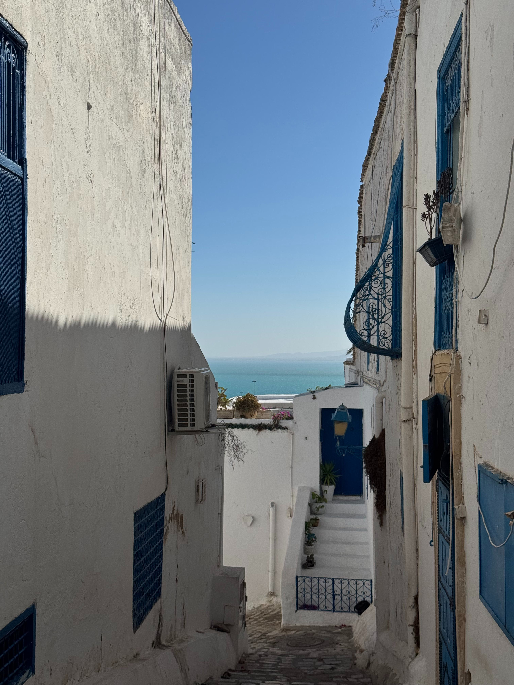
Join the quest